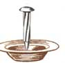

COUNTRY LORE
Last winter was a financially lean one for us, and one evening my father called while I was struggling with the concept of preparing dinner. As I complained to him about my "empty" refrigerator and pantry, he suggested that I cook a batch of "nail soup." Nail soup?
He proceeded to tell me the recipe: Find a nail for the pot and set it aside. Then look around for a potato or carrot to give the soup "a little substance and flavor." When I told him I did have a potato, he told me to keep looking. "You're bound to have a few more ingredients to add to the pot," he said.
Oh, I did have a little rice left, and a handful of beans, half an onion, some pepper ... I started to get the idea. Smiling, I thanked him and hung up. When I served my family nail soup that night, they enjoyed their dinner so much they asked for seconds. They also had fun trying to find the nail, which, of course, I never used.
- Nona Perez
Calistoga, California
Pack Up Your Feet
Don't throw away the Styrofoam plates from meat packages. Instead, have your child place his or her foot on one, trace the outline of the foot in marker, and cut the shape out. Do the same for the other foot. Then stick them inside the child's shoes or boots. They will keep the dampness out all winter so that your child's feet will remain warm and dry.
One more tip: To keep battery terminals from corroding, dab a little bit of Vaseline on and around the posts. Then put a penny on the top of each post. It'll do the trick.
-David Dudley
Argyle, New York
Scent-sible Idea
When the flood left us with no running water, I found a solution to the vile odor that developed from being unable to flush the toilet. I poured approximately 1/3 cup of apple-cider vinegar into the toilet several times daily. It worked so well that I poured some down all of our unused drains, and it got rid of all the stale odors.
-Merry Anne Burrier
Leighton, Iowa
Ward Off Vampires and Fleas
Flea shampoo works fine for cats - for a while. But here's a way to make absolutely sure that you remove those fleas and then keep them off for good.
Simmer two cloves of garlic on the stove until they are translucent and the water looks like the equivalent of garlic powder. Remove from heat and leave the pot until the mixture has cooled. After giving your cat it's normal flea bath - leaving the shampoo on for at least five minutes before rinsing so you kill all of the fleas and eggs - slowly pour the garlic solution over your cat, concentrating especially on its belly and hind quarters. You will have a happy flealess cat.
-Chloe Chitwood
Knoxville, Tennessee
Bring Your Own Franks
My family loves going to baseball games together. Unfortunately ballpark franks have become very expensive. So we came up with an idea that allows us to eat toasty warm hot dogs without going broke.
Before the game (or picnic or other outing), heat some briquettes in the grill. Then find a smooth, oval rock (approximately six to eight inches in diameter), slip it into the hot coals, and close the grill's lid. Let the rock sit for 30 to 45 minutes.
Before leaving your house, wrap the raw franks individually in aluminum foil. Then remove the rock with tongs and a very thick pot holder; wrap in aluminum foil. Carefully place all of the franks on top of your foil-covered rock and wrap the whole thing in newspaper. Place inside a canvas backpack. By the time you get to your destination, you will have a hot treat ready to serve. Don't forget to pack the buns and condiments separately.
-Rebecca Gene Allison
Lakewood, Colorado
Raising The Alarm
When one of my children was sick, I found it difficult to get my household chores done with a fussy 'patient' constantly begging for attention. But I solved the problem with the aid of an alarm clock. I set the alarm for 30 minutes, and used that time to read to (or otherwise entertain) the child. Then, when the alarm went off, I would reset it for another 30 minutes, with the understanding that my child would amuse him- or herself so I could do housework. When the alarm rang again, I'd return for 30 more minutes of play.
The technique worked well, eliminated the pleas for attention, and helped me avoid yelling the typical too-busy mother's response: "In a minute!"
-Lillian Reynolds
New Orleans, Louisiana
Christmas Tree Treats
When you take down your cut Christmas tree, lean the evergreen against an outside wall or fence and redecorate the boughs with balls of birdseed, bits of old bread, suet-dipped pine cones, and other treats for winter birds. By the time your feathered friends have finished feasting, the dry tree can simply be laid on its side in an out-of-the-way spot, to provide shelter for squirrels and other small animals.
-Lise Dale
Corrales, New Mexico
Truly Tar-rific Stains
To make an inexpensive wood stain, mix a little roofing tar in a can with some kerosene By varying the amount of tar, you'll obtain shades from light tan to walnut brown, or even black. The thinned out tar loses its stickiness, sets up well, and - once dry - is perfectly compatible with clear finishes such as polyurethane or shellac.
-Thomas Woods
Jefferson, New Hampshire
Editor's note: MOTHERS Country Lore section is a great chance for you to share your practical, down-home solutions to life's most frustrating problems. We'd love to hear some of your most helpful hints. Send them along with your photo to "Lore," Mother Earth News, P.O. Box 129, Arden, NC 28704, and please include your phone number.
|
 Wage war on fleas with a bucket of water and garlic. |
Beat the ballpark-frank scam by bringing your own.You can even keep them warm. |
|
|
|
|
|